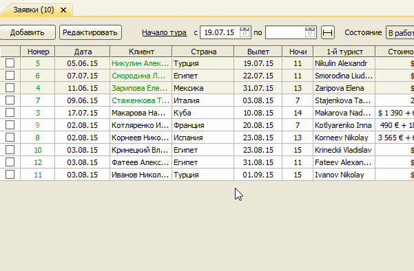
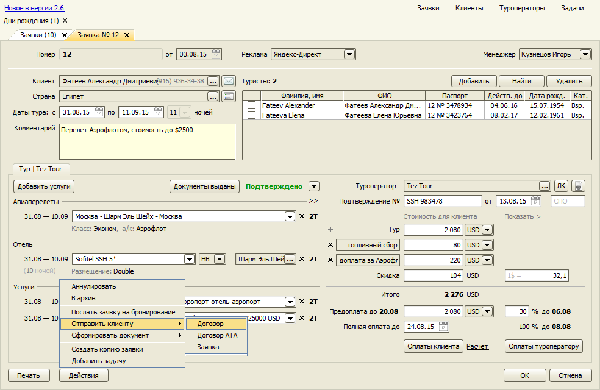
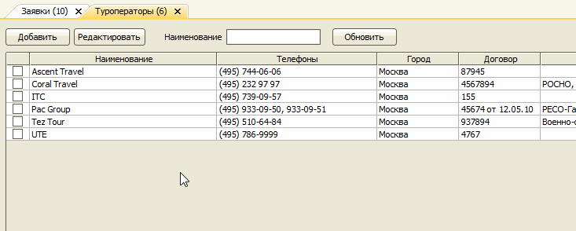
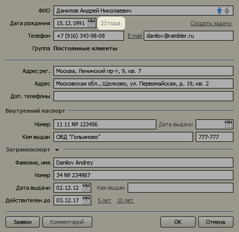

Измения в версии 2.6
- Новый статус заявки “Документы выданы”
- Отправка документов клиенту
- Архив туроператоров
- Показ возраста по введенной дате рождения
- Теги для загранпаспорта клиента в шаблонах
Новый статус заявки “Документы выданы” #docs-delivered
Заявку можно перевести в состояние “Документы выданы”, после чего в журнале заявок будет видно, какие туристы уже получили документы, а какие еще нет. ФИО клиентов, которым уже выданы документы, выделяется зеленым цветом.

Отправка документов клиенту #send-print-file
Файлы для печати, формирующиеся в Заявке, теперь можно сразу отправить клиенту или открыть папку с готовым файлом. В меню, вызывающемся по кнопке Действия, появилось 2 соответствующих пункта: Отправить клиенту и Сформировать документ.

Архив туроператоров #touroperator-archive
Для того чтобы уже несуществующие туроператоры не мешали при выборе из списка, их можно поместить в архив.

Показ возраста по введенной дате рождения #age
На формах, где вводится дата рождения, справочно отображается возраст на текущий день.

Теги для загранпаспорта клиента в шаблонах #int-passport-tags
В шаблонах печатных форм заявки теперь можно использовать теги:
- [ЗагранпаспортКлиента.ФамилияИмя]
- [ЗагранпаспортКлиента.Номер]
- [ЗагранпаспортКлиента.ДатаВыдачи]
- [ЗагранпаспортКлиента.ДействителенДо]
- [ЗагранпаспортКлиента.КемВыдан]
- [ЗагранпаспортКлиента.Номер]
Остались вопросы? Напишите нам на e-mail